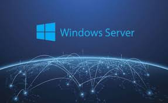
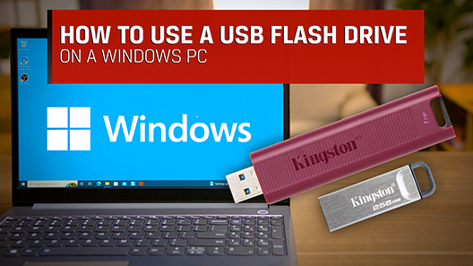
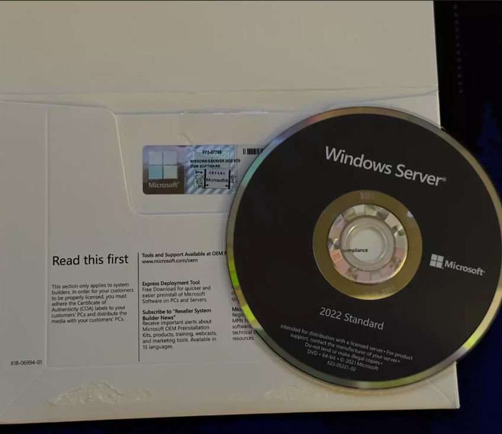

Instalar Windows Server desde el medio de instalación
Aprenda a crear una unidad USB o un DVD de arranque para instalar Windows Server en sus dispositivos. La creación de un medio de instalación es un paso crucial para configurar un nuevo servidor o actualizar uno existente.
Prerrequisitos

Los medios de instalación de Windows Server se pueden obtener a través de diferentes canales, incluyendo OEM, minoristas y suscripciones. Antes de instalar Windows Server, asegúrese de cumplir con los siguientes requisitos:
Hardware
Cumplir con los requisitos mínimos de hardware.
Una unidad flash USB de al menos 8 GB.
Una unidad óptica capaz de grabar DVDs de doble capa.
Un DVD de doble capa de 8,5 GB.
Software
Determinar la versión de Windows Server adecuada.
Tener una clave de producto o licencia válida.
Crear una unidad flash USB de arranque

Para crear una unidad USB de arranque, siga estos pasos:
Localice el archivo ISO de instalación de Windows Server.
Haga clic derecho en el archivo ISO y seleccione Montar.
Se creará una unidad virtual con el contenido del ISO.
Copie el contenido del ISO a la unidad USB.
Crear un DVD de arranque

Para grabar un DVD de instalación:
Inserte un DVD de doble capa en la unidad óptica.
Localice el archivo ISO de instalación de Windows Server.
Haga clic derecho en el ISO y seleccione Grabar imagen de disco.
Seleccione la unidad óptica correcta y haga clic en Grabar.
(Opcional) Active la opción Verificar disco después de grabar.
Configurar los ajustes del BIOS
Antes de instalar Windows Server desde USB o DVD, se debe modificar la configuración del BIOS para cambiar el orden de arranque.
Acceder al BIOS
Reinicie su equipo.
Presione la tecla correspondiente para acceder al BIOS (generalmente F2, F10, F12 o Supr).
Consulte el manual del fabricante si no está seguro de la tecla correcta.
Modificar el orden de arranque
Busque la opción Orden de arranque o Boot Sequence.
Mueva la unidad USB o DVD a la parte superior de la lista.
Guarde los cambios y salga del BIOS.
El equipo se reiniciará y arrancará desde la unidad seleccionada.